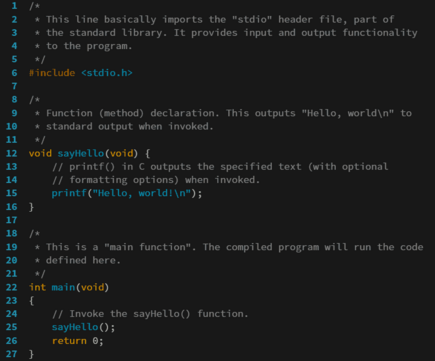

A programming language is a system of notation for writing
computer programs. [1]
Programming languages
are described in terms of their syntax (form) and semantics (meaning), usually defined by a formal
language. Languages usually provide features such as a type system, variables, and mechanisms for
error
handling. An implementation of a programming language is required in order to execute programs,
namely
an interpreter or a compiler. An interpreter directly executes the source code, while a compiler
produces an executable program.

The source code for a computer program
in C. The gray lines are comments that
explain the program to humans. When
compiled and run, it will give the output
"Hello, world!".
Computer architecture has strongly influenced the design of programming languages, with the
most
common type (imperative languages—which implement operations in a specified order) developed to
perform
well on the popular von Neumann architecture. While early programming languages were closely tied to
the
hardware, over time they have developed more abstraction to hide implementation details for greater
simplicity.
Thousands of programming languages—often classified as imperative, fnctional, logic, or
object-oriented—have been developed for a wide variety of uses. Many aspects of programming language
design involve tradeoffs—for example, exception handling simplifies error handling, but at a
performance
cost. Programming language theory is the subfield of computer science that studies the design,
implementation, analysis, characterization, and classification of programming languages.
Definitions
Programming languages differ from natural languages in that natural languages are used for
interaction between people, while programming languages are designed to allow humans to
communicate instructions to machines.[citation needed]
The term computer language is sometimes used interchangeably with "programming language".[2]
However,
usage of these terms varies among authors.
In one usage, programming languages are described as a subset of computer languages.[3] Similarly,
the
term "computer language" may be used in contrast to the term "programming language" to describe
languages used in computing but not considered programming languages[citation needed]. Most
practical
programming languages are Turing complete,[4] and as such are equivalent in what programs they can
compute.
Another usage regards programming languages as theoretical constructs for programming abstract
machines
and computer languages as the subset thereof that runs on physical computers, which have finite
hardware
resources.[5] John C. Reynolds emphasizes that formal specification languages are just as much
programming languages as are the languages intended for execution. He also argues that textual and
even
graphical input formats that affect the behavior of a computer are programming languages, despite
the
fact they are commonly not Turing-complete, and remarks that ignorance of programming language
concepts
is the reason for many flaws in input formats.[6]
History
Main article: History of programming languages
Early developments
The first programmable computers were invented at the end of the 1940s, and with them, the first
programming languages.[7] The earliest computers were programmed in first-generation programming
languages (1GLs), machine language (simple instructions that could be directly executed by the
processor). This code was very difficult to debug and was not portable between different computer
systems.[8] In order to improve the ease of programming, assembly languages (or second-generation
programming languages—2GLs) were invented, diverging from the machine language to make programs
easier to understand for humans, although they did not increase portability.[9]
Initially, hardware resources were scarce and expensive, while human resources were cheaper.
Therefore, cumbersome languages that were time-consuming to use, but were closer to the hardware for
higher efficiency were favored.[10] The introduction of high-level programming languages
(third-generation programming languages—3GLs)—revolutionized programming. These languages abstracted
away the details of the hardware, instead being designed to express algorithms that could be
understood more easily by humans. For example, arithmetic expressions could now be written in
symbolic notation and later translated into machine code that the hardware could execute.[9] In
1957, Fortran (FORmula TRANslation) was invented. Often considered the first compiled high-level
programming language,[9][11] Fortran has remained in use into the twenty-first century.[12]
1960s and 1970s
Around 1960, the first mainframes—general purpose computers—were developed, although they could only
be operated by professionals and the cost was extreme. The data and instructions were input by punch
cards, meaning that no input could be added while the program was running. The languages developed
at this time therefore are designed for minimal interaction.[14] After the invention of the
microprocessor, computers in the 1970s became dramatically cheaper.[15] New computers also allowed
more user interaction, which was supported by newer programming languages.[16]
Lisp, implemented in 1958, was the first functional programming language.[17] Unlike Fortran, it
supported recursion and conditional expressions,[18] and it also introduced dynamic memory
management on a heap and automatic garbage collection.[19] For the next decades, Lisp dominated
artificial intelligence applications.[20] In 1978, another functional language, ML, introduced
inferred types and polymorphic parameters.[16][21]
After ALGOL (ALGOrithmic Language) was released in 1958 and 1960,[22] it became the standard in
computing literature for describing algorithms. Although its commercial success was limited, most
popular imperative languages—including C, Pascal, Ada, C++, Java, and C#—are directly or indirectly
descended from ALGOL 60.[23][12] Among its innovations adopted by later programming languages
included greater portability and the first use of context-free, BNF grammar.[24] Simula, the first
language to support object-oriented programming (including subtypes, dynamic dispatch, and
inheritance), also descends from ALGOL and achieved commercial success.[25] C, another ALGOL
descendant, has sustained popularity into the twenty-first century. C allows access to lower-level
machine operations more than other contemporary languages. Its power and efficiency, generated in
part with flexible pointer operations, comes at the cost of making it more difficult to write
correct code.[16]
Prolog, designed in 1972, was the first logic programming language, communicating with a computer
using formal logic notation.[26][27] With logic programming, the programmer specifies a desired
result and allows the interpreter to decide how to achieve it.[28][27]
1980s to 2000s
During the 1980s, the invention of the personal computer transformed the roles for which programming
languages were used.[29] New languages introduced in the 1980s included C++, a superset of C that
can compile C programs but also supports classes and inheritance.[30] Ada and other new languages
introduced support for concurrency.[31] The Japanese government invested heavily into the so-called
fifth-generation languages that added support for concurrency to logic programming constructs, but
these languages were outperformed by other concurrency-supporting languages.[32][33]
Due to the rapid growth of the Internet and the World Wide Web in the 1990s, new programming
languages were introduced to support Web pages and networking.[34] Java, based on C++ and designed
for increased portability across systems and security, enjoyed large-scale success because these
features are essential for many Internet applications.[35][36] Another development was that of
dynamically typed scripting languages—Python, JavaScript, PHP, and Ruby—designed to quickly produce
small programs that coordinate existing applications. Due to their integration with HTML, they have
also been used for building web pages hosted on servers.[37][38]
2000s to present
During the 2000s, there was a slowdown in the development of new programming languages that achieved
widespread popularity.[39] One innovation was service-oriented programming, designed to exploit
distributed systems whose components are connected by a network. Services are similar to objects in
object-oriented programming, but run on a separate process.[40] C# and F# cross-pollinated ideas
between imperative and functional programming.[41] After 2010, several new languages—Rust, Go,
Swift, Zig and Carbon —competed for the performance-critical software for which C had historically
been used.[42] Most of the new programming languages use static typing while a few numbers of new
languages use dynamic typing like Ring and Julia.[43][44]
Some of the new programming languages are classified as visual programming languages like Scratch,
LabVIEW and PWCT. Also, some of these languages mix between textual and visual programming usage
like Ballerina.[45][46][47][48] Also, this trend lead to developing projects that help in developing
new VPLs like Blockly by Google.[49] Many game engines like Unreal and Unity added support for
visual scripting too.[50][51]
Elements
Every programming language includes fundamental elements for describing data and the operations or
transformations applied to them, such as adding two numbers or selecting an item from a collection.
These elements are governed by syntactic and semantic rules that define their structure and meaning,
respectively.